*RegionSetDE*: differential chromatin signal over user-defined region sets
Sebastian Gregoricchio, Ph.D.
Netherlands Cancer Institute, Oncogenomics division, Amsterdam - Netherlandss.gregoricchio@nki.nl
Last update: 21th September, 2026
Source:vignettes/RegionSetDE.vignette.Rmd
RegionSetDE.vignette.RmdIntroduction
RegionSetDE (Region Set Differential Enrichment) asks whether chromatin signal changes over regions that you define, rather than over regions that a peak caller happens to find. The regions are grouped into named sets of arbitrary width and number, such as promoter classes, enhancer catalogues, chromatin states, or motif-derived binding sites, and the same model fit is then tested at two levels: one region at a time, and one whole set at a time.
The second level is the reason the package exists. A great deal of chromatin biology is phrased as a question about a class of elements rather than about individual loci. Does H3K4me3 redistribute away from CpG island promoters in this mutant? is a question about a set, and answering it by counting how many members of the set reached an FDR threshold conflates the size of the effect with the power to detect it. Here the set is the unit of the test, and the effect size on the set comes with a confidence interval built on the biological samples, alongside a second interval describing how much the effect varies between the regions inside the set.
Because no peak calling happens anywhere in the pipeline, the region definitions come from you and stay fixed across conditions. Nothing is redefined when the signal moves, which is what makes a redistribution visible instead of being absorbed into a new set of peak boundaries.
What this vignette covers
The example follows one dataset from BAM files to an interpreted result. Along the way each object is opened up, so that you know what it holds and how to pull the parts out. The last section is a decision guide: which function answers which question.
Installation
if (!requireNamespace("BiocManager", quietly = TRUE)) {
install.packages("BiocManager")
}
BiocManager::install("RegionSetDE")
# Development version
# devtools::install_github("sebastian-gregoricchio/RegionSetDE")The example dataset
The objects shipped with the package come from the liver ChIP-seq libraries of the EURATRANS project, distributed through the chromstaRData package. The contrast compares H3K4me3 in the spontaneously hypertensive rat (SHR) against the Brown Norway strain (BN), two biological replicates each, aligned to rn4 and restricted to chromosome 12 so that everything in this vignette runs in seconds.
Four region sets were built, ordered by the amount of H3K4me3 they are expected to carry:
| Set | Definition | Expectation |
|---|---|---|
| promoterCpG | 1 kb windows on transcription start sites overlapping a CpG island | highest signal, where a promoter effect should appear |
| promoterNonCpG | 1 kb windows on transcription start sites with no CpG island | intermediate |
| geneBody | 1 kb windows inside genes, at least 2 kb from any start site | low |
| intergenic | 1 kb windows at least 10 kb from any gene | the negative control |
The sets are disjoint by construction, and a window claimed by an earlier set is never reused by a later one, so a region belongs to exactly one set. The intergenic set earns its place: a method that returns hits there is returning noise, and having a set whose answer you already know is the cheapest calibration available.
Every object is loaded through a single accessor.
counts <- loadExampleData("counts")Notice that the script which generated all of them is installed with the package, and it is the place to look when you want to know exactly how something was built:
file.edit(system.file("scripts", "make-data.R", package = "RegionSetDE"))Loading the regions
A region set collection is built with loadRegions(),
which accepts a named list whose elements are BED file paths,
GRanges objects, or data.frames with chromosome, start and
end columns. The three can be mixed in the same call.
regions <- loadRegions(list(promoters = "annotation/promoters.bed",
enhancers = enhancerGRanges,
CTCF = "peaks/CTCF.narrowPeak"),
genomeAssembly = "hg38")When the sets are already encoded in a column of one table,
splitLoadRegions() does the splitting and the loading in
one step, which is the more common situation with an annotated BED
file.
regionTable <- loadExampleData("regions", verbose = FALSE)
regionRanges <-
GenomicRanges::makeGRangesFromDataFrame(regionTable,
keep.extra.columns = TRUE)
regions <- splitLoadRegions(regionRanges,
splitBy = "setName",
genomeAssembly = "rn4",
verbose = FALSE)
regions
> ### RegionSetDE object ###
> Genome assembly: rn4
> Chromosome style: UCSC
> Region sets: 4
>
> promoterNonCpG 498 regions (498,000 bp)
> intergenic 1,500 regions (1,500,000 bp)
> geneBody 1,500 regions (1,500,000 bp)
> promoterCpG 303 regions (303,000 bp)
>
> Blacklist: not applied
> Whitelist: not appliedThe result is an S4 object of class RegionSetDE. Its
slots are reached with @:
| Slot | Description |
|---|---|
| regions |
GRangesList with one element per region
set, named |
| blacklist | the exclusion regions applied, NULL until
applyBlacklist() runs |
| whitelist | the regions kept, NULL until
applyWhitelist() runs |
| genome.assembly | assembly string, or NULL
|
| seqlevels.style | naming style the sets were harmonised to |
| filtering.log | one row per filtering step, with how many regions each set lost |
| parameters | the arguments of every call that touched the object |
The set names come back from regionSetNames(), and the
regions themselves from the regions slot:
regionSetNames(regions)
> [1] "promoterNonCpG" "intergenic" "geneBody" "promoterCpG"
lengths(regions@regions)
> promoterNonCpG intergenic geneBody promoterCpG
> 498 1500 1500 303
head(regions@regions$promoterCpG, 3)
> GRanges object with 3 ranges and 1 metadata column:
> seqnames ranges strand | regionId
> <Rle> <IRanges> <Rle> | <character>
> [1] chr12 1019593-1020592 * | region_00090
> [2] chr12 1291077-1292076 * | region_00114
> [3] chr12 1365795-1366794 * | region_00119
> -------
> seqinfo: 1 sequence from rn4 genome; no seqlengthsExcluding regions
Regions overlapping an exclusion list are dropped before anything is counted. Working on the object rather than on the coordinates means the operation is recorded and can be read back later.
exclusionRegions <- loadExampleData("exclusionRegions", verbose = FALSE)
regions <- applyBlacklist(regions,
blacklist = exclusionRegions,
verbose = FALSE)
regions@filtering.log
> step region.set n.before n.after n.removed
> 1 blacklist promoterNonCpG 498 464 34
> 2 blacklist intergenic 1500 1112 388
> 3 blacklist geneBody 1500 1370 130
> 4 blacklist promoterCpG 303 278 25applyWhitelist() is the complement and keeps only what
falls inside the supplied regions, which is how you restrict an analysis
to a capture panel or to a single chromosome.
Notice that the exclusion list shipped here is not an ENCODE blacklist. Rat rn4 has none, so it was assembled from the UCSC assembly gap track together with bins carrying implausible coverage in the input libraries. It is fine for an example and should not be reused elsewhere.
Counting
countReads() counts alignments over every region of
every set. Reads can be counted once per region, which is the default,
or over fixed-width tiles inside each region when tileWidth
is set.
counts <-
countReads(regions,
bamFiles = bamPaths,
sampleNames = c("BN_1", "BN_2", "SHR_1", "SHR_2"),
sampleMetadata = data.frame(sample = c("BN_1", "BN_2", "SHR_1", "SHR_2"),
condition = c("BN", "BN", "SHR", "SHR")),
pairedEnd = FALSE,
fragmentLength = 180,
minMapq = 10,
nThreads = 4)Paired-end libraries are counted as fragments: a fragment counts in
every region it overlaps, the stretch between its two reads included.
The BAM files are cut into pieces of at most 50 Mb, shared among the
threads, so even a single file runs faster with a larger
nThreads.
The counts and the library sizes are two separate things. Every
region is counted, wherever it lies, and the counts only need the
chromosomes carrying regions. The library sizes, instead, are meant to
measure the whole library, so by default every chromosome is read,
including those without any region. Some chromosomes are better left out
of that total: the mitochondrial genome in ATAC-seq, whose share of the
reads changes from sample to sample, chrY when the samples differ in
sex, or the unplaced and alternative contigs.
excludeChromosomes takes them out of the library sizes, and
later out of the background bins, while the regions lying on them are
still counted. The names follow the BAM files, and the contigs can be
collected from their header:
bamChromosomes <- names(Rsamtools::scanBamHeader(bamPaths[1])[[1]]$targets)
counts <-
countReads(regions,
bamFiles = bamPaths,
excludeChromosomes = c("chrM", "chrY", grep("_|EBV", bamChromosomes, value = TRUE)),
nThreads = 4)When only a few regions are needed,
fullLibrarySize = FALSE limits the reading to the
chromosomes carrying them. The counts stay the same and come back in
seconds, but the library sizes cover those chromosomes only, and
normalizeCounts() warns if the chosen method depends on
them.
countBigwig() is the equivalent for coverage tracks, and
loadCounts() takes a count matrix produced elsewhere, so an
existing featureCounts or deepTools table can enter
the pipeline without recounting.
The object returned extends RangedSummarizedExperiment,
which means the whole Bioconductor idiom applies to it directly:
counts <- loadExampleData("counts", verbose = FALSE)
dim(counts)
> [1] 3224 4
head(SummarizedExperiment::assay(counts, "counts"), 3)
> lv-H3K4me3-BN-female-bio1-tech1
> promoterNonCpG|region_00002 0
> promoterNonCpG|region_00003 0
> promoterNonCpG|region_00005 1
> lv-H3K4me3-BN-male-bio2-tech1
> promoterNonCpG|region_00002 0
> promoterNonCpG|region_00003 0
> promoterNonCpG|region_00005 0
> lv-H3K4me3-SHR-male-bio2-tech1
> promoterNonCpG|region_00002 0
> promoterNonCpG|region_00003 0
> promoterNonCpG|region_00005 0
> lv-H3K4me3-SHR-male-bio3-tech1
> promoterNonCpG|region_00002 0
> promoterNonCpG|region_00003 0
> promoterNonCpG|region_00005 1
SummarizedExperiment::colData(counts)
> DataFrame with 4 rows and 7 columns
> sample bam.file
> <character> <character>
> lv-H3K4me3-BN-female-bio1-tech1 lv-H3K4me3-BN-female.. /home/s.gregoricchio..
> lv-H3K4me3-BN-male-bio2-tech1 lv-H3K4me3-BN-male-b.. /home/s.gregoricchio..
> lv-H3K4me3-SHR-male-bio2-tech1 lv-H3K4me3-SHR-male-.. /home/s.gregoricchio..
> lv-H3K4me3-SHR-male-bio3-tech1 lv-H3K4me3-SHR-male-.. /home/s.gregoricchio..
> condition sex biologicalReplicate
> <factor> <character> <character>
> lv-H3K4me3-BN-female-bio1-tech1 BN female bio1
> lv-H3K4me3-BN-male-bio2-tech1 BN male bio2
> lv-H3K4me3-SHR-male-bio2-tech1 SHR male bio2
> lv-H3K4me3-SHR-male-bio3-tech1 SHR male bio3
> paired.end library.size
> <logical> <numeric>
> lv-H3K4me3-BN-female-bio1-tech1 FALSE 386378
> lv-H3K4me3-BN-male-bio2-tech1 FALSE 400384
> lv-H3K4me3-SHR-male-bio2-tech1 FALSE 337600
> lv-H3K4me3-SHR-male-bio3-tech1 FALSE 780222The region set membership travels in the rowData, one
label per row, which is how every downstream function knows which rows
belong to which set:
head(SummarizedExperiment::rowData(counts), 3)
> DataFrame with 3 rows and 4 columns
> region.set region.id tile.id regionId
> <character> <character> <integer> <character>
> promoterNonCpG|region_00002 promoterNonCpG region_00002 NA region_00002
> promoterNonCpG|region_00003 promoterNonCpG region_00003 NA region_00003
> promoterNonCpG|region_00005 promoterNonCpG region_00005 NA region_00005
table(SummarizedExperiment::rowData(counts)$region.set)
>
> geneBody intergenic promoterCpG promoterNonCpG
> 1370 1112 278 464Whether the object is counted per region or per tile is recorded in its own slot, and the filters applied upstream are still there:
Background bins
countBackground() counts the same libraries over wide
bins tiling the genome, by default 10 kb, excluding the regions under
analysis and the chromosomes left out with
excludeChromosomes. Those bins are the closest thing
available to a set of rows known to carry no biological effect, and
three separate steps use them: normalisation, filtering, and the
calibration checks.
counts <- countBackground(counts, binSize = 10000, nThreads = 4)They live in the metadata of the object and can be inspected like any matrix:
backgroundBins <- S4Vectors::metadata(counts)$background
dim(backgroundBins)
> [1] 1579 4
head(backgroundBins, 3)
> class: RangedSummarizedExperiment
> dim: 3 4
> metadata(4): spacing width shift bin
> assays(1): counts
> rownames: NULL
> rowData names(0):
> colnames(4): lv-H3K4me3-BN-female-bio1-tech1
> lv-H3K4me3-BN-male-bio2-tech1 lv-H3K4me3-SHR-male-bio2-tech1
> lv-H3K4me3-SHR-male-bio3-tech1
> colData names(2): bam.files totalsNormalisation
The scaling factors decide what a fold change means, and in chromatin
data they are rarely a detail. normalizeCounts() offers
"TMM", "TMMwsp", "RLE",
"upperQuartile", "librarySize",
"background", "loess", "spikeIn",
"manual" and "none".
The distinction that matters is what each method assumes:
-
"TMM","RLE","upperQuartile"estimate the factors from the regions themselves, and assume most of them do not change. That assumption is safe when the regions are a broad sample of the genome and unsafe when they are a curated set chosen because it is expected to respond. -
"background"estimates them from the background bins instead. The assumption moves to the bins, which is where you want it: the regions under test are free to change as much as they like. -
"spikeIn"and"manual"take the factors from outside altogether, which is the right answer whenever an exogenous reference or a greenlist estimate exists.
counts <- normalizeCounts(counts, method = "background", verbose = FALSE)
SummarizedExperiment::colData(counts)
> DataFrame with 4 rows and 9 columns
> sample bam.file
> <character> <character>
> lv-H3K4me3-BN-female-bio1-tech1 lv-H3K4me3-BN-female.. /home/s.gregoricchio..
> lv-H3K4me3-BN-male-bio2-tech1 lv-H3K4me3-BN-male-b.. /home/s.gregoricchio..
> lv-H3K4me3-SHR-male-bio2-tech1 lv-H3K4me3-SHR-male-.. /home/s.gregoricchio..
> lv-H3K4me3-SHR-male-bio3-tech1 lv-H3K4me3-SHR-male-.. /home/s.gregoricchio..
> condition sex biologicalReplicate
> <factor> <character> <character>
> lv-H3K4me3-BN-female-bio1-tech1 BN female bio1
> lv-H3K4me3-BN-male-bio2-tech1 BN male bio2
> lv-H3K4me3-SHR-male-bio2-tech1 SHR male bio2
> lv-H3K4me3-SHR-male-bio3-tech1 SHR male bio3
> paired.end library.size norm.factor
> <logical> <numeric> <numeric>
> lv-H3K4me3-BN-female-bio1-tech1 FALSE 386378 0.795932
> lv-H3K4me3-BN-male-bio2-tech1 FALSE 400384 0.803658
> lv-H3K4me3-SHR-male-bio2-tech1 FALSE 337600 0.921449
> lv-H3K4me3-SHR-male-bio3-tech1 FALSE 780222 1.696608
> scaling.factor
> <numeric>
> lv-H3K4me3-BN-female-bio1-tech1 0.543313
> lv-H3K4me3-BN-male-bio2-tech1 0.568472
> lv-H3K4me3-SHR-male-bio2-tech1 0.549586
> lv-H3K4me3-SHR-male-bio3-tech1 2.338629A second assay is added and the original counts are left untouched:
Before committing, it is worth seeing how much the choice actually
moves the samples. plotNormComparison() puts the methods
side by side, and returnData = TRUE hands back the
numbers.
plotNormComparison(loadExampleData("counts", verbose = FALSE))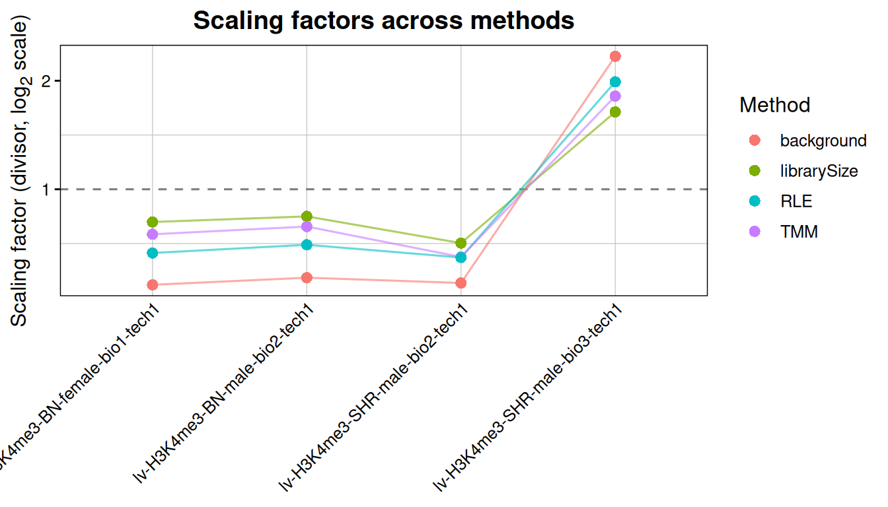
When the methods agree, the choice does not matter and any of them will do. When they disagree, each is making a different assumption about what in the data is invariant, and the results downstream will differ accordingly.
It is worth being clear about what this plot can and cannot settle.
It cannot tell you whether a global shift is technical or biological,
because nothing in endogenous sequencing data can: H3K27ac genuinely
1.5x higher everywhere and an immunoprecipitation that worked 1.5x
better produce the same reads. method = "background"
assumes the background bins are invariant enough to carry the technical
scaling, which is a reasonable assumption for most experiments and is
still an assumption rather than a measurement. Deciding the question
needs an external anchor: spike-in chromatin, spike-in cells, a
calibrated input, or loci independently validated as invariant.
What the plot does answer is whether it matters. If the sets separate the same way under background, TMM and spike-in normalisation, the conclusion does not rest on the assumption. If they do not, the assumption is doing the work and belongs in the methods section rather than in a default.
plotSetMA() asks the same question set by set, which
catches the case where one class of regions carries a shift the others
do not.
plotSetMA(counts, groupBy = "condition")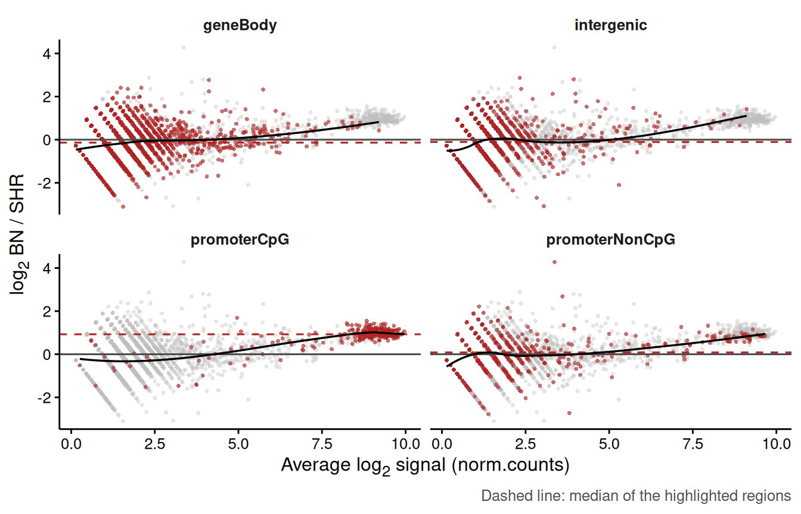
Filtering and quality control
filterRegions() drops the rows carrying too little
signal to be worth testing, with the criterion chosen among
"background", "abundance",
"proportion", "byExpr" and
"manual". The default compares each region against the
background bins and keeps what rises above them by a given fold
change.
nrow(counts)
> [1] 3224
counts <- filterRegions(counts, method = "background", foldChange = 2, verbose = FALSE)
nrow(counts)
> [1] 1895
table(SummarizedExperiment::rowData(counts)$region.set)
>
> geneBody intergenic promoterCpG promoterNonCpG
> 909 440 269 277Notice what happened to the sets. The intergenic control loses most of its rows, which is the expected behaviour and a useful sanity check: if the low-signal set survives filtering intact, either the filter is too permissive or the regions are not what you think they are.
Two plots are worth a look before fitting anything.
plotRegionPCA(counts, colourBy = "condition", shapeBy = "sex")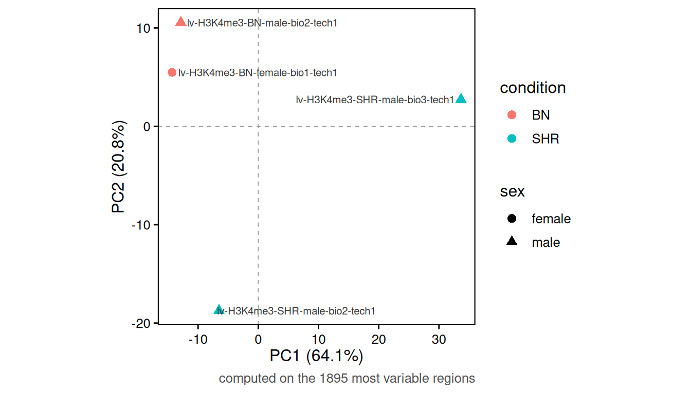
plotSampleCorrelation(counts, groupBy = "condition")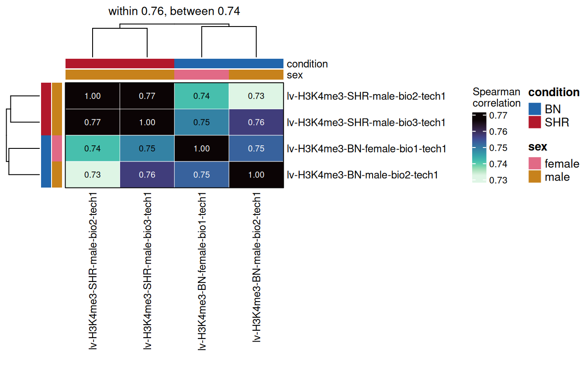
If the samples do not separate by condition here, that is not
necessarily fatal, since a real effect can be confined to a small class
of regions and be invisible in a global ordination. It does mean the
effect is not global, which is information worth having before
interpreting a set-level result. Running
plotRegionPCA(set = ) on one set at a time is the way to
find out where the structure lives.
Fitting the model
One fit serves both levels of testing. fitRegions()
takes a formula evaluated on the colData and an engine
among "edgeR" (quasi-likelihood negative binomial),
"voom" (limma on log-CPM with precision weights),
"dream" (limma with random effects) and
"deseq2" (negative binomial Wald test).
fit <- fitRegions(counts,
design = ~ condition,
engine = "edgeR",
verbose = FALSE)
fit
> An object of class 'RegionSetDE.fit'
> engine : edgeR
> rows : 1895 (region level)
> samples : 4 (lv-H3K4me3-BN-female-bio1-tech1, lv-H3K4me3-BN-male-bio2-tech1, lv-H3K4me3-SHR-male-bio2-tech1, lv-H3K4me3-SHR-male-bio3-tech1)
> coefficients : (Intercept), conditionSHR
> set universe : otherSets (matched on width and abundance)
> common disp. : 0.139 (BCV 0.373)The engines are not interchangeable in the way a menu suggests.
"edgeR" is the default and the right choice for counts with
replicates. "voom" becomes preferable as the number of
samples grows and library sizes vary widely. "dream" is the
only option when the design carries a random effect, for instance
repeated measures on the same donor, written as
~ condition + (1|donor). "deseq2" is there for
continuity with an existing analysis rather than because it answers a
different question.
The RegionSetDE.fit object holds:
| Slot | Description |
|---|---|
| fit | list with the engine’s own fit object |
| engine | which engine produced it |
| design | the design matrix |
| design.formula | the formula it came from |
| dispersion | the dispersion used, and where it came from |
| counts | the RegionSetDE.counts the model was
fitted on, filtering included |
| universe | the comparison rows for the set-level test, built once here |
| samples | the samples that entered the fit |
Two accessors avoid reaching into the slots:
fitCounts(fit)
> class: RegionSetDE.counts
> dim: 1895 4
> metadata(5): signal.type count.like background background.holdout
> normalization
> assays(2): counts norm.counts
> rownames(1895): promoterNonCpG|region_00012 promoterNonCpG|region_00017
> ... promoterCpG|region_03797 promoterCpG|region_03798
> rowData names(4): region.set region.id tile.id regionId
> colnames(4): lv-H3K4me3-BN-female-bio1-tech1
> lv-H3K4me3-BN-male-bio2-tech1 lv-H3K4me3-SHR-male-bio2-tech1
> lv-H3K4me3-SHR-male-bio3-tech1
> colData names(9): sample bam.file ... norm.factor scaling.factor
class(fitObject(fit))
> [1] "DGEGLM"
> attr(,"package")
> [1] "edgeR"The comparison universe
A competitive set test asks whether the regions of a set moved more than other regions did, so it needs something to compare them against. Taking every other row as it stands would confound the comparison with region width and coverage, since a set of 1 kb promoters compared against a background of long, weakly covered intergenic windows will look different for reasons that have nothing to do with the condition.
fitRegions() therefore builds a matched universe by
default, drawing comparison rows with a similar width and abundance
distribution. plotUniverseMatching() shows whether the
matching worked.
setResults <- testRegionSets(fit = fit,
contrast = c("condition", "SHR", "BN"),
verbose = FALSE)
plotUniverseMatching(object = setResults,
set = "promoterCpG",
covariate = "abundance")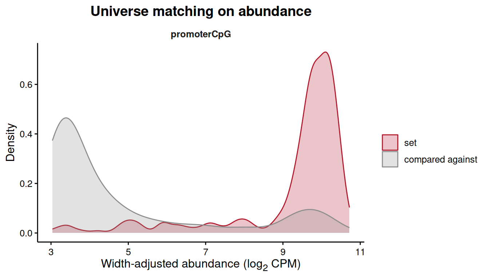
If the two distributions do not overlap, the competitive test is
comparing apples to oranges and its p-value should not be trusted.
Raising universeRatio, or matching on fewer covariates,
usually fixes it.
Testing regions
testRegions() tests every region for a change between
two groups.
results <- testRegions(fit,
contrast = c("condition", "SHR", "BN"),
verbose = FALSE)
results
> An object of class 'RegionSetDE.results'
> contrast : condition: SHR vs BN
> engine : edgeR
> regions : 1895
> counts carried : 4 samples
> thresholds : FDR < 0.05 | |log2FC| > 0
> changing regions:
> promoterNonCpG: 1 up, 2 down
> intergenic: 2 up, 3 down
> geneBody: 0 up, 3 down
> promoterCpG: 0 up, 1 downThe three-element form of contrast averages the design
rows of each group and takes the difference, which gives the same answer
whichever level happens to be the reference and whether the design was
written as ~ condition or ~ 0 + condition.
Naming a coefficient directly also works, and is the usual source of
confusion when the coefficient turns out to be the reference level.
The results table comes out with resultsTable():
resultTable <- resultsTable(results)
head(resultTable, 3)
> region.set region.id tile.id seqnames start end width log2FC
> 1 promoterNonCpG region_00012 NA chr12 26988 27987 1000 -0.4744875
> 2 promoterNonCpG region_00017 NA chr12 39449 40448 1000 -1.6911510
> 3 promoterNonCpG region_00019 NA chr12 44116 45115 1000 0.1328365
> average.signal stat p.value FDR diff.status regionId
> 1 3.098695 0.16629041 0.6880013 0.9200864 null region_00012
> 2 3.141973 2.33758830 0.1429932 0.7997195 null region_00017
> 3 3.273341 0.01002874 0.9213104 0.9807286 null region_00019| Column | Meaning |
|---|---|
| region.set | which set the region belongs to |
| region.id | region identifier, carried from the input |
| seqnames, start, end, width | coordinates |
| log2FC | log2 fold change of the second group over the first |
| average.signal | average abundance, the x axis of an MA plot |
| stat | the engine’s test statistic |
| p.value | raw p-value |
| FDR | adjusted p-value |
| diff.status |
up, down or null
from the stored thresholds |
Notice that the correction is applied over all the rows of the
object, across the sets, and regionSets subsets the output
afterwards. Correcting inside each set separately would make the FDR of
one set depend on how many other sets you happened to load, which is not
a property anyone wants in a result.
Other accessors reach the rest of the object:
contrastName(results)
> [1] "condition: SHR vs BN"
head(resultRanges(results), 2)
> GRanges object with 2 ranges and 10 metadata columns:
> seqnames ranges strand | region.set
> <Rle> <IRanges> <Rle> | <character>
> promoterNonCpG|region_00012 chr12 26988-27987 * | promoterNonCpG
> promoterNonCpG|region_00017 chr12 39449-40448 * | promoterNonCpG
> region.id tile.id log2FC average.signal
> <character> <integer> <numeric> <numeric>
> promoterNonCpG|region_00012 region_00012 <NA> -0.474488 3.09870
> promoterNonCpG|region_00017 region_00017 <NA> -1.691151 3.14197
> stat p.value FDR diff.status
> <numeric> <numeric> <numeric> <factor>
> promoterNonCpG|region_00012 0.16629 0.688001 0.920086 null
> promoterNonCpG|region_00017 2.33759 0.142993 0.799720 null
> regionId
> <character>
> promoterNonCpG|region_00012 region_00012
> promoterNonCpG|region_00017 region_00017
> -------
> seqinfo: 1 sequence from rn4 genome
resultCounts(results)
> class: RegionSetDE.counts
> dim: 1895 4
> metadata(5): signal.type count.like background background.holdout
> normalization
> assays(2): counts norm.counts
> rownames(1895): promoterNonCpG|region_00012 promoterNonCpG|region_00017
> ... promoterCpG|region_03797 promoterCpG|region_03798
> rowData names(4): region.set region.id tile.id regionId
> colnames(4): lv-H3K4me3-BN-female-bio1-tech1
> lv-H3K4me3-BN-male-bio2-tech1 lv-H3K4me3-SHR-male-bio2-tech1
> lv-H3K4me3-SHR-male-bio3-tech1
> colData names(9): sample bam.file ... norm.factor scaling.factortopRegions() ranks and filters in one call. With
FDR = 1 it ranks without filtering, which is what you want
when exploring or when power is limited:
topRegions(results, n = 5, FDR = 1)
> region.set region.id tile.id seqnames start end width
> 1 promoterNonCpG region_02996 NA chr12 36842295 36843294 1000
> 2 intergenic region_03590 NA chr12 44174500 44175499 1000
> 3 promoterNonCpG region_00212 NA chr12 2500829 2501828 1000
> 4 geneBody region_02435 NA chr12 29881730 29882729 1000
> 5 geneBody region_02220 NA chr12 27481625 27482624 1000
> log2FC average.signal stat p.value FDR diff.status
> 1 -5.203835 5.159079 84.13617 1.148685e-08 2.176757e-05 down
> 2 -2.887100 5.237329 43.04577 2.743053e-06 2.599042e-03 down
> 3 -3.222630 4.816977 34.29977 1.370844e-05 6.573186e-03 down
> 4 -2.778908 5.406565 36.15528 1.387480e-05 6.573186e-03 down
> 5 -2.281658 5.277404 29.11255 3.347081e-05 1.268544e-02 down
> regionId
> 1 region_02996
> 2 region_03590
> 3 region_00212
> 4 region_02435
> 5 region_02220topRegions(results, n = 3, set = "promoterCpG", FDR = 1, sortBy = "log2FC")
> region.set region.id tile.id seqnames start end width log2FC
> 1 promoterCpG region_03747 NA chr12 46273309 46274308 1000 2.148719
> 2 promoterCpG region_01273 NA chr12 15719347 15720346 1000 -1.771521
> 3 promoterCpG region_00824 NA chr12 10369814 10370813 1000 1.635046
> average.signal stat p.value FDR diff.status regionId
> 1 4.113765 4.520231 0.0472100147 0.66268873 null region_03747
> 2 5.933614 21.009851 0.0002058661 0.03901163 down region_01273
> 3 4.658080 7.080136 0.0163032446 0.45433307 null region_00824Tiled regions
When the counting was tiled, the p-value of a region is a Simes
combination across its tiles. That answers does any part of this
region change rather than does the whole region change,
and the distinction matters for wide domains: a long region that moves
over one tile in forty comes out with a small p-value and a small
overall fold change. The log2FC reported is the fold change
of the most significant tile, not an average, because that is the
quantity matching the p-value.
The tile-level table stays available:
On an object counted per region there are no tiles and
tileTable() says so rather than returning an empty
table.
Looking at the results
plotVolcano(results, labelTop = 3)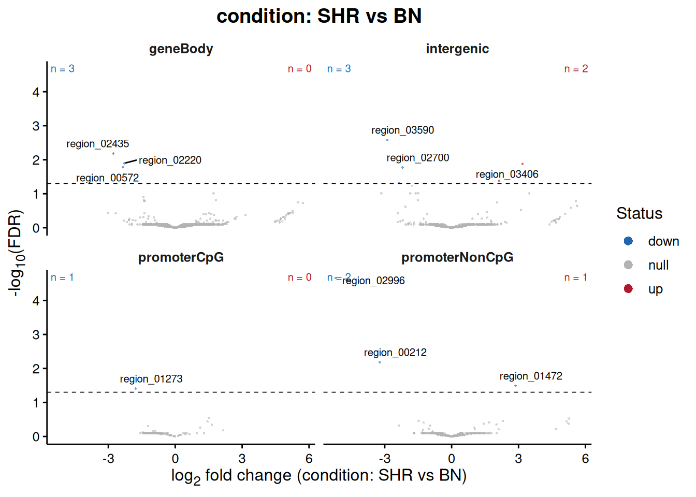
plotResultsMA(results)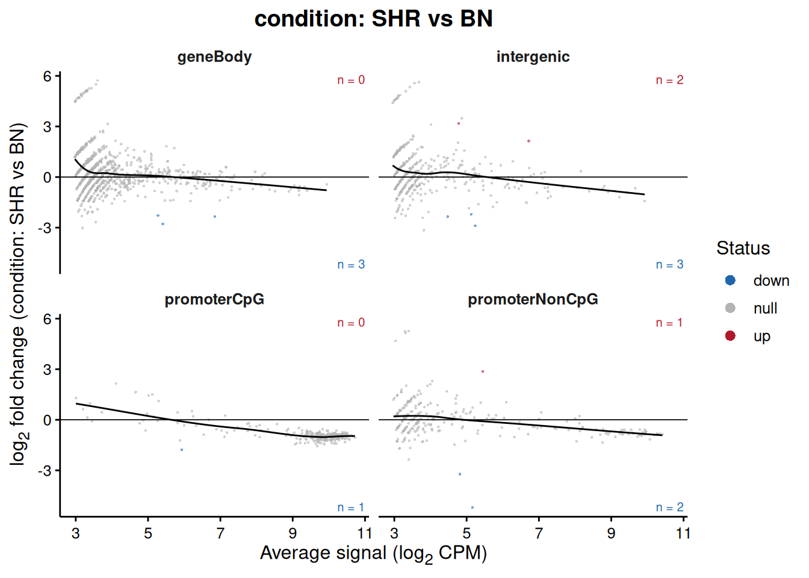
Faceting by set is the default in both, and it is the more informative view here: a volcano split by region class shows immediately whether the changes concentrate in one kind of element.
topRegion <- topRegions(results, n = 1, FDR = 1)$region.id
plotRegion(results, region = topRegion, groupBy = "condition")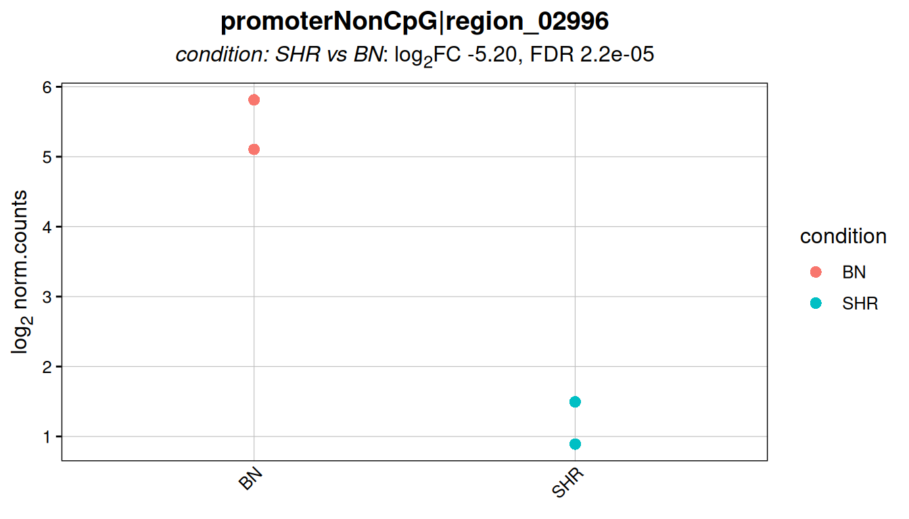
plotTopHeatmap(results, n = 20, FDR = 1)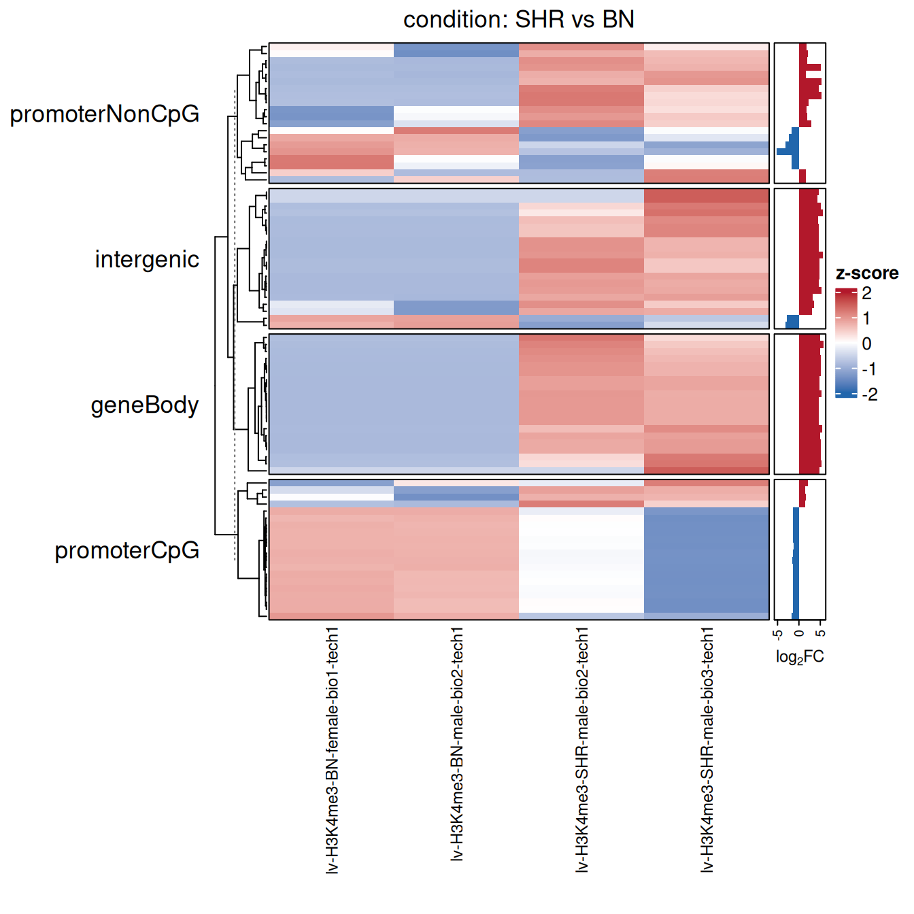
Testing region sets
This is the level the package was built for.
testRegionSets() asks whether a whole set responded, and
runs two tests that answer genuinely different questions.
setResults <- testRegionSets(fit,
contrast = c("condition", "SHR", "BN"),
method = c("camera", "fry"),
verbose = FALSE)
setResults
> An object of class 'RegionSetDE.setResults'
> test : set
> contrast : condition: SHR vs BN
> engine : edgeR
> methods : camera, fry
> universe : otherSets (matched on width and abundance)
>
> region.set n.regions mean.log2FC delta.log2FC CI.lower CI.upper CI.type
> promoterCpG 269 -0.8340 -0.9310 -1.930 0.561 sample
> geneBody 909 0.2910 0.4070 -0.333 0.919 sample
> intergenic 440 0.2650 0.2060 -0.171 0.367 sample
> promoterNonCpG 277 -0.0209 -0.0787 -0.263 0.251 sample
> camera.FDR fry.FDR inter.region.cor.universe
> 0.938 0.54 0.378
> 0.938 0.54 0.453
> 0.938 0.54 0.382
> 0.938 0.54 0.350setTable <- resultsTable(setResults)
setTable
> region.set n.regions n.comparison n.comparison.overlapping mean.log2FC
> 1 promoterCpG 269 314 0 -0.83367077
> 2 geneBody 909 986 0 0.29148227
> 3 intergenic 440 1354 0 0.26499294
> 4 promoterNonCpG 277 1378 0 -0.02089479
> median.log2FC mean.log2FC.comparison delta.log2FC CI.lower CI.upper
> 1 -0.9443600 0.09704300 -0.93071378 -1.9314597 0.5607824
> 2 0.1692341 -0.11505923 0.40654151 -0.3328615 0.9187083
> 3 0.1740960 0.05862768 0.20636526 -0.1710428 0.3668162
> 4 -0.1571407 0.05781212 -0.07870691 -0.2633465 0.2509689
> CI.type heterogeneity.CI.lower heterogeneity.CI.upper inter.region.cor
> 1 sample -2.547867 0.6864395 0.8583680
> 2 sample -1.574041 2.3871240 0.2721337
> 3 sample -1.761069 2.1737990 0.2733108
> 4 sample -2.067061 1.9096471 0.4433140
> inter.region.cor.universe median.width sample.delta.log2FC sample.delta.SE
> 1 0.3775802 1000 -0.685338676 0.28961692
> 2 0.4530172 1000 0.292923395 0.14544165
> 3 0.3815880 1000 0.097886686 0.06250318
> 4 0.3504707 1000 -0.006188815 0.05976724
> sample.delta.df sample.delta.p camera.direction camera.p fry.direction
> 1 2 0.1416115 Down 0.3213638 Down
> 2 2 0.1816079 Up 0.5187249 Down
> 3 2 0.2578184 Up 0.7773973 Down
> 4 2 0.9269756 Down 0.9384488 Down
> fry.p camera.FDR fry.FDR sample.delta.FDR
> 1 0.2686203 0.9384488 0.5401741 0.3437579
> 2 0.5401741 0.9384488 0.5401741 0.3437579
> 3 0.4717232 0.9384488 0.5401741 0.3437579
> 4 0.4613130 0.9384488 0.5401741 0.9269756| Column | Meaning |
|---|---|
| region.set | the set |
| n.regions | how many of its regions survived filtering |
| mean.log2FC | mean fold change of the set |
| mean.log2FC.comparison | mean fold change of the comparison rows |
| delta.log2FC | the difference between the two, the effect size |
| CI.lower, CI.upper | interval selected by effectMethod,
sample-based by default |
| CI.type | which of the two intervals the columns above hold |
| heterogeneity.CI.lower/upper | spread of the effect between the loci of the set |
| sample.delta.log2FC | the same effect estimated from one score per library |
| n.comparison.overlapping | comparison rows overlapping the set in the genome |
| camera.FDR | competitive test, adjusted |
| fry.FDR | self-contained test, adjusted |
Reading the output
Read the effect size before the p-value. A set of 30,000 promoters tested as if its regions were independent returns a p-value below anything a computer will print for a mean shift of 0.05 log2, which tells you nothing about whether the shift matters.
Two intervals, answering two questions. The default
CI.lower and CI.upper come from
effectMethod = "sample". One number is computed per
library, the mean signal over the set minus the mean signal over its
comparison, and those numbers are run through the design of the
experiment. The replication is the biological samples, which is where it
comes from in the experiment: four libraries give an interval as wide as
four libraries support, whether the set holds twenty regions or thirty
thousand.
The heterogeneity.CI columns hold the other one: the
mean of the per-region fold changes, with its variance inflated by
1 + (n - 1) * rho for the correlation between neighbouring
loci. It describes how consistently the regions of the set respond,
conditional on these libraries, and it is worth reading. It is not a
confidence interval on a condition effect, because its sampling units
are genomic loci, and adding loci does not add biological replication.
Quote the sample interval as the result and the heterogeneity interval
as a description of the set.
The two tests answer different questions.
camera is competitive: it asks whether the set moved more
than the regions it is compared against, and it is invariant to a
scaling error affecting everything equally. fry is
self-contained: it asks whether the set moved away from zero at all.
| camera | fry | Reading |
|---|---|---|
| significant | significant | evidence the set moved, and that it moved more than its comparison |
| significant | not | evidence of a difference relative to the comparison; the absolute claim is unresolved |
| not | significant | evidence the set moved, none that it moved differently from its comparison |
| not | not | neither test found evidence, which is not evidence of no effect |
The second row used to be read here as redistribution. It does not
support that reading. Failing to reject a self-contained null is not
evidence that the absolute change is zero, and the two tests do not have
the same power against the same alternatives, so the pattern arises
whenever fry is the weaker of the two. A redistribution
claim is a claim about two sets, one gaining what the other lost, and
testSetContrast() is where it belongs. A claim that a set
did not change needs an equivalence test against a bounded
near-zero interval, which a non-significant fry is not.
One more thing the self-contained test cannot do: detect a genuinely global shift. Every centring normalisation, background and TMM included, removes exactly that before the test sees the data. If the question is whether the mark changed in absolute terms, the answer has to come from a spike-in.
The competitive test is the one to lead with. It runs on the
per-region statistics through limma::cameraPR, which makes
it behave identically across the engines, whereas the self-contained
test is computed on the log-CPM matrix and is therefore a transformation
away from what edgeR and DESeq2 actually
fitted.
“More” means more than the sets you loaded. The
comparison universe is drawn from the other region sets in the object,
so a competitive p-value is relative to those and not to the genome.
With two sets loaded, the test compares them to each other. With four
sets that respond alike, each is being asked whether it stands out
against three sets behaving as it does, and adjusted p-values clustered
near one is what that looks like: a property of the comparison, not a
finding. makeSetUniverse(universeSets = ), or the same
argument on fitRegions() and testRegionSets(),
fixes the pool explicitly, and the sets forming it are printed with the
universe object.
In the table above no set reaches significance, which is the honest
outcome for four libraries on one chromosome. The informative part is
promoterCpG: a delta.log2FC around -0.9 with
an interval that only just includes zero, in the direction H3K4me3
biology would predict, and in the one set where a promoter effect
belongs. The intergenic control sits near zero, as it should.
Plots for the set level
plotSetEffect(setResults)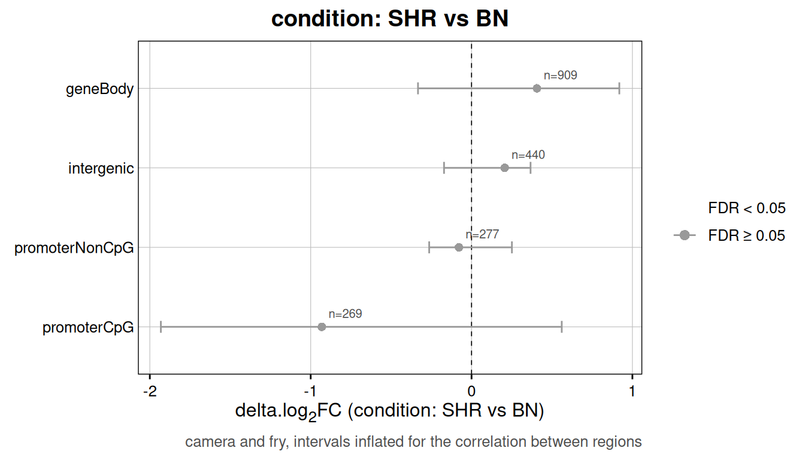
plotSetDistribution(setResults)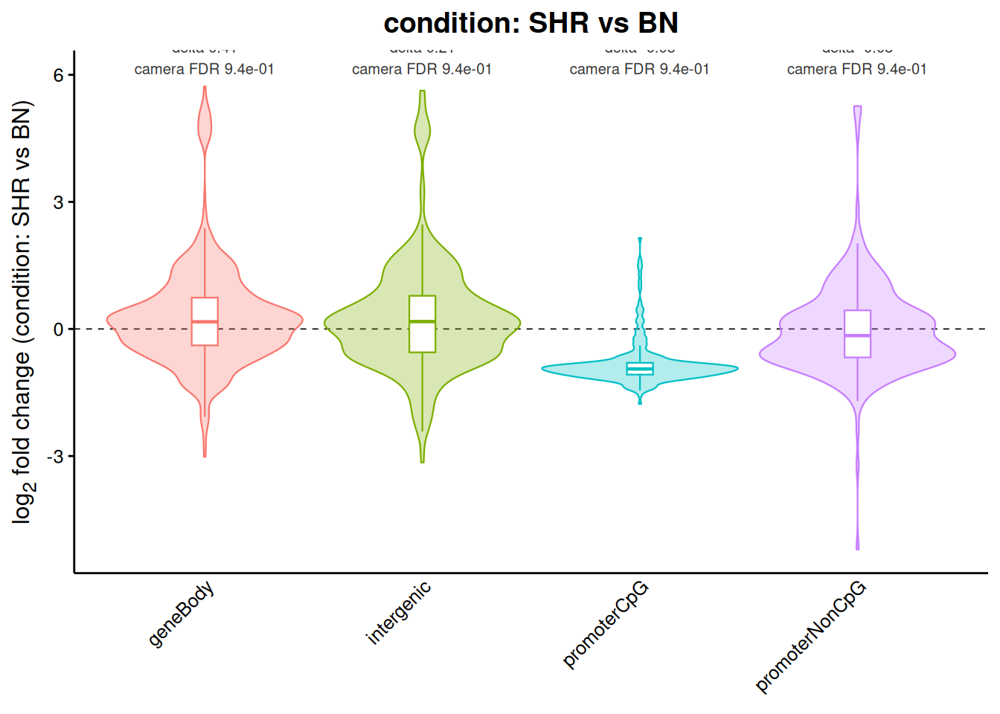
plotSetEffect() shows the effect size and its interval,
which is the figure to put in a paper.
plotSetDistribution() shows the whole fold change
distribution behind each summary, which is where you find out that a
mean of zero came from a set splitting in two rather than from a set not
moving.
plotSetSignal(setResults, groupBy = "condition")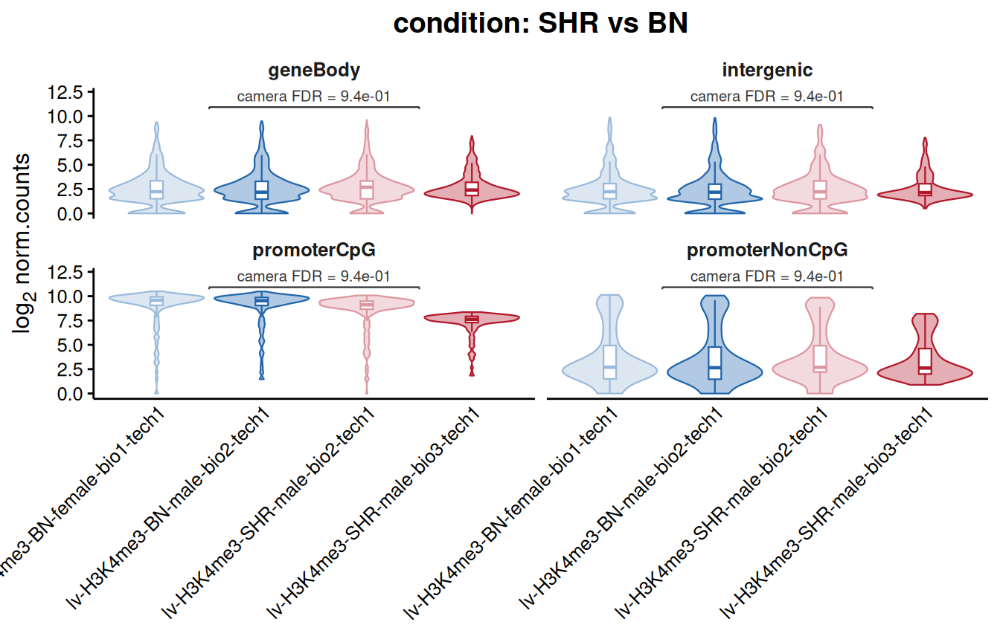
Contrasting two sets directly
Did the effect differ between CpG island promoters and everything
else? is a different question from did either of them
change, and testSetContrast() is the one that answers
it.
setContrast <- testSetContrast(fit,
contrast = c("condition", "SHR", "BN"),
set1 = "promoterCpG",
set2 = "intergenic",
verbose = FALSE)
setContrast
> An object of class 'RegionSetDE.setResults'
> test : setContrast
> contrast : condition: SHR vs BN
> engine : edgeR
> methods : camera
> universe : pairedSet
>
> set.1 set.2 delta.log2FC CI.lower CI.upper CI.type camera.FDR
> promoterCpG intergenic -1.1 -2.2 0.746 sample 0.316Use this whenever the hypothesis is comparative. Comparing two
camera p-values by eye is not the same test, and it is
wrong in the usual way: a difference in significance is not a
significant difference.
When there is no contrast at all
Everything above runs on a contrast. An experiment with three
replicates of one factor and no second condition has none, so
testSetContrast() has nothing to compare, and the question
there is a different one: does one set carry more of the factor than
another? That is what scoreRegionSets() answers.
The score of a set is its summarised signal divided by a reference measured in the same library, by default the background bins. It is a ratio taken inside one library, so the depth and the scaling factors cancel before the score exists. The raw counts are therefore what it reads, and no choice of normalisation can move the result.
setScores <- scoreRegionSets(loadExampleData("counts", verbose = FALSE),
reference = "background",
verbose = FALSE)
setScores
> An object of class 'RegionSetDE.setScores'
> region sets : geneBody, intergenic, promoterCpG, promoterNonCpG
> libraries : 4
> reference : background
> signal : mean of 'counts' per base pair
> comparisons : 6
>
> set.1 set.2 n.libraries mean.delta.score CI.lower CI.upper
> promoterCpG promoterNonCpG 4 3.180 2.880 3.480
> intergenic promoterCpG 4 -5.890 -6.740 -5.040
> geneBody promoterCpG 4 -5.360 -6.380 -4.330
> intergenic promoterNonCpG 4 -2.710 -3.290 -2.130
> geneBody promoterNonCpG 4 -2.180 -2.920 -1.430
> geneBody intergenic 4 0.532 0.348 0.716
> p.value FDR
> 5.51e-05 0.000331
> 2.04e-04 0.000613
> 4.68e-04 0.000937
> 6.59e-04 0.000989
> 2.60e-03 0.002720
> 2.72e-03 0.002720
>
> The libraries are the replication, the composition of the sets is not controlled for.resultsTable() returns the comparisons and
scoreTable() the per-library numbers behind them:
head(scoreTable(setScores))
> sample region.set n.regions set.signal
> 1 lv-H3K4me3-BN-female-bio1-tech1 geneBody 1370 0.006523358
> 2 lv-H3K4me3-BN-male-bio2-tech1 geneBody 1370 0.007104380
> 3 lv-H3K4me3-SHR-male-bio2-tech1 geneBody 1370 0.006563504
> 4 lv-H3K4me3-SHR-male-bio3-tech1 geneBody 1370 0.019312409
> 5 lv-H3K4me3-BN-female-bio1-tech1 intergenic 1112 0.004901978
> 6 lv-H3K4me3-BN-male-bio2-tech1 intergenic 1112 0.005135791
> reference.signal score
> 1 0.005052627 0.36858114
> 2 0.005285830 0.42657861
> 3 0.004592457 0.51519989
> 4 0.012350258 0.64498698
> 5 0.005052627 -0.04366946
> 6 0.005285830 -0.04154346The difference between two sets is taken library by library, so the reference cancels a second time and what gets tested is the log ratio between the two sets. Neither the reference nor the normalisation enters it. The libraries do: four of them here, three in most experiments, and an interval built on two or three degrees of freedom is wide. That width is what three replicates support, and a narrower one would have come from treating the regions as replicates.
plotSetSignal(setScores, groupBy = "condition")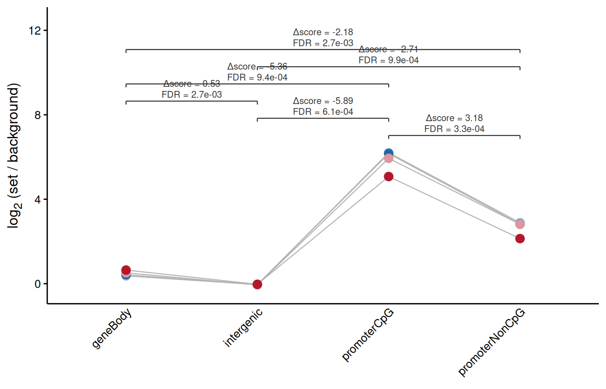
The lines join the points of each library across the sets, because the comparison is paired and a figure drawing the sets as independent clouds would be showing a test other than the one on the bracket.
Read the output as a statement about signal and not yet as one about
the factor. Region sets differ in width, mappability, GC content and
accessibility, and those differences produce coverage in a library where
nothing is bound, reproducibly, across every replicate, in the same way
real binding does. perBasepair = TRUE removes the width
term and leaves the others standing. Putting the composition of the sets
next to the scores is what turns the observation into a claim. An input,
an IgG or a spike-in removes the need to argue it: the score becomes an
enrichment, and where one exists the comparison belongs in
testSetContrast() instead.
Checking the calibration
A set-level result rests on the dispersion and on the null being where you think it is, and both can be checked directly rather than assumed.
estimateNullDispersion() estimates the dispersion from
rows that should carry no effect, which is what makes an exploratory
analysis without replicates possible at all. What it measures is how
much these two libraries differ over rows assumed not to respond. What a
replicated experiment measures is how much two animals, two donors or
two cultures differ, which is a larger quantity that contains the first,
and no amount of null rows recovers it: variability that was never
sampled is not in the data. Read the output as conditional on that
assumption and say so in the methods.
By default half the null rows are held back for the calibration
check. Those rows are independent of the dispersion but not of the
normalisation, since the background bins have already been through
csaw::normFactors(); holdout.type reports
which. Passing normalizeCounts(backgroundHoldout = 0.5)
splits the bins earlier and keeps the same rows out of both steps, and
estimateNullDispersion() then picks up that split rather
than drawing a second one on top of it:
nullDispersion <-
estimateNullDispersion(loadExampleData("counts", verbose = FALSE) |>
normalizeCounts(method = "background",
verbose = FALSE),
source = "background",
verbose = FALSE)
nullDispersion
> $dispersion
> [1] 0.06820971
>
> $bcv
> [1] 0.2611699
>
> $source
> [1] "background"
>
> $n.rows
> [1] 560
>
> $holdout.index
> [1] 11 27 31 37 46 48 53 55 66 87 90 92 94 97 99
> [16] 104 106 108 111 113 115 117 119 121 123 125 127 131 133 135
> [31] 137 139 141 143 145 163 165 167 169 171 173 175 177 180 183
> [46] 185 187 190 195 198 200 203 207 209 211 213 215 217 219 222
> [61] 224 226 228 230 233 235 237 239 241 243 245 247 249 251 253
> [76] 255 258 261 263 265 267 269 271 273 275 277 279 281 283 285
> [91] 287 290 292 294 296 299 302 304 306 308 311 318 320 322 330
> [106] 332 334 336 338 340 343 346 348 355 357 361 363 365 367 369
> [121] 372 375 377 379 381 383 386 389 392 395 397 400 402 404 408
> [136] 410 412 414 416 419 421 423 425 427 429 431 433 439 442 447
> [151] 451 455 457 459 461 463 465 467 470 472 474 477 481 483 486
> [166] 488 490 492 494 496 498 500 502 504 506 508 510 512 514 516
> [181] 518 520 522 524 526 528 530 532 535 537 540 542 544 546 548
> [196] 550 553 555 557 559 561 565 567 569 571 580 583 592 601 604
> [211] 606 609 615 617 620 662 664 666 668 670 685 687 689 691 693
> [226] 696 699 702 704 706 708 710 712 714 716 718 720 722 724 726
> [241] 728 730 733 735 737 739 741 743 745 747 750 754 756 758 760
> [256] 762 764 766 768 770 772 774 777 779 781 789 791 793 797 804
> [271] 807 811 813 816 818 821 825 827 829 831 832 834 840 842 844
> [286] 846 848 850 852 854 856 858 862 864 866 868 871 874 877 885
> [301] 894 899 903 905 907 909 911 913 915 917 919 921 923 925 928
> [316] 930 934 936 938 940 942 946 950 952 954 956 958 960 962 964
> [331] 968 971 974 978 981 990 997 999 1001 1005 1025 1028 1035 1043 1049
> [346] 1061 1067 1086 1088 1090 1092 1094 1096 1098 1100 1102 1104 1106 1108 1110
> [361] 1112 1114 1116 1118 1120 1122 1124 1126 1128 1130 1132 1134 1136 1138 1141
> [376] 1143 1145 1147 1149 1151 1153 1155 1157 1159 1161 1163 1165 1167 1169 1171
> [391] 1173 1175 1177 1179 1181 1183 1185 1187 1189 1191 1193 1195 1197 1199 1201
> [406] 1203 1205 1207 1209 1211 1213 1215 1217 1219 1221 1223 1225 1227 1230 1232
> [421] 1234 1237 1239 1242 1244 1252 1255 1257 1259 1262 1264 1266 1270 1272 1274
> [436] 1276 1278 1280 1282 1284 1288 1291 1293 1296 1298 1300 1303 1305 1307 1309
> [451] 1312 1314 1316 1319 1322 1324 1326 1328 1330 1334 1336 1338 1340 1343 1346
> [466] 1354 1356 1358 1360 1363 1365 1367 1369 1371 1374 1381 1387 1391 1395 1397
> [481] 1399 1401 1403 1405 1409 1415 1418 1420 1422 1424 1429 1431 1433 1435 1437
> [496] 1439 1441 1443 1445 1447 1449 1451 1453 1455 1457 1459 1461 1463 1465 1467
> [511] 1469 1471 1473 1475 1477 1479 1481 1483 1485 1487 1489 1491 1494 1496 1503
> [526] 1505 1507 1509 1511 1513 1515 1519 1521 1523 1525 1528 1530 1532 1534 1536
> [541] 1538 1540 1542 1544 1546 1548 1550 1552 1554 1556 1558 1561 1563 1565 1567
> [556] 1569 1571 1573 1575 1577
>
> $holdout.type
> [1] "dispersion"
>
> $samples
> [1] "lv-H3K4me3-BN-female-bio1-tech1" "lv-H3K4me3-BN-male-bio2-tech1"
> [3] "lv-H3K4me3-SHR-male-bio2-tech1" "lv-H3K4me3-SHR-male-bio3-tech1"checkNullCalibration() goes further and runs the actual
contrast on those null rows. Under a correctly calibrated test the
p-values should be uniform.
calibration <- checkNullCalibration(fit = fit,
contrast = c("condition", "SHR", "BN"),
source = "background",
verbose = FALSE)
plotNullCalibration(calibration)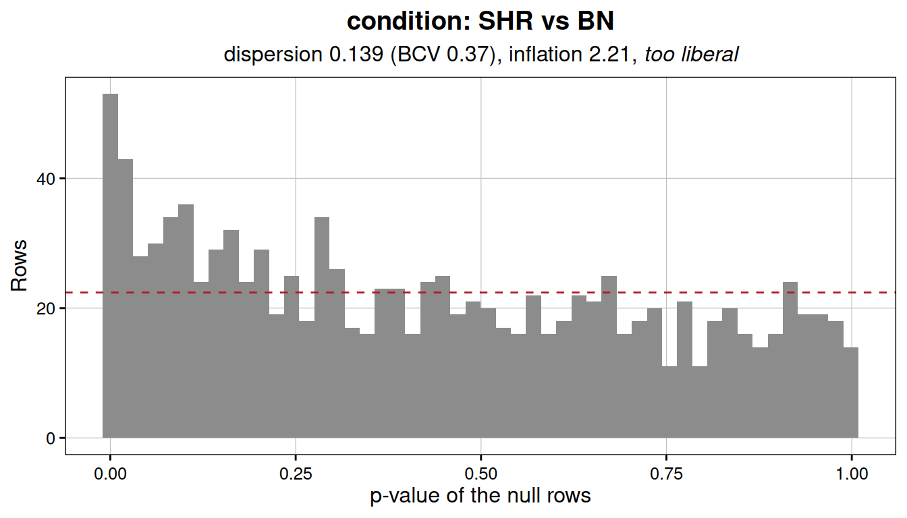
A flat histogram means the test is behaving. A peak near zero means it is anticonservative and the FDRs downstream are optimistic, usually because the dispersion is underestimated or because the normalisation left a systematic difference between the groups. A peak near one means the opposite, and the analysis is losing power it could have.
Notice that a set defined as low-signal is a poor source of null
rows, even though it sounds like the natural choice.
estimateNullDispersion() will refuse rather than return a
dispersion estimated from rows with almost no counts:
estimateNullDispersion(counts = counts,
source = "regionSet",
regionSets = "intergenic",
verbose = FALSE)
>
[1m
[33mError
[39m:
[22m
>
[33m!
[39m Only 89 null rows reach 10 counts, which is too few to estimate a dispersion from.Working without replicates
One library per condition is the normal situation in CUT&Tag and in a good deal of ChIP-seq, and it is the case every count-based method refuses outright. The refusal is well founded: with a single sample on each side there are no residual degrees of freedom, so a dispersion cannot be read from the residual variation. There is none to read.
RegionSetDE takes the way out that the experiment already suggests. Some rows are not expected to respond, the background bins most obviously, and the variation across those rows is the variation that would have been seen between replicates. Estimate the dispersion there, hold it fixed, and the test becomes possible.
This happens on its own. fitRegions() notices that the
design has no residual degrees of freedom and estimates the dispersion
from the background rather than failing or, worse, fitting a Poisson and
returning confident nonsense. What follows is mostly about seeing what
it did and checking whether it was reasonable.
Notice what the approach buys and what it costs. The assumption moves from most regions do not change to these particular rows do not change, which is a statement you can inspect and, further down, test. It is weaker than pretending replicates exist and stronger than having them.
Reducing the example to one sample per strain
The packaged data has two biological replicates on each side, which
makes it convenient for showing the method: the same contrast runs both
ways and the answers can be compared. Both strains have a
bio2 library and both are male, so the subset is a clean
one-versus-one with the sex difference removed as well.
counts <- loadExampleData("counts", verbose = FALSE)
singleCounts <- selectSamples(counts = counts,
biologicalReplicate == "bio2",
verbose = FALSE)
SummarizedExperiment::colData(singleCounts)
> DataFrame with 2 rows and 7 columns
> sample bam.file
> <character> <character>
> lv-H3K4me3-BN-male-bio2-tech1 lv-H3K4me3-BN-male-b.. /home/s.gregoricchio..
> lv-H3K4me3-SHR-male-bio2-tech1 lv-H3K4me3-SHR-male-.. /home/s.gregoricchio..
> condition sex biologicalReplicate
> <factor> <character> <character>
> lv-H3K4me3-BN-male-bio2-tech1 BN male bio2
> lv-H3K4me3-SHR-male-bio2-tech1 SHR male bio2
> paired.end library.size
> <logical> <numeric>
> lv-H3K4me3-BN-male-bio2-tech1 FALSE 400384
> lv-H3K4me3-SHR-male-bio2-tech1 FALSE 337600selectSamples() drops the normalisation when it subsets,
since scaling factors estimated on four libraries do not describe two,
so the object is renormalised and refiltered from scratch.
singleCounts <- normalizeCounts(singleCounts,
method = "background",
verbose = FALSE)
singleCounts <- filterRegions(singleCounts, verbose = FALSE)
nrow(singleCounts)
> [1] 2598Fitting
Nothing about the call changes.
singleFit <- fitRegions(singleCounts,
design = ~ condition,
engine = "edgeR",
verbose = FALSE)
singleFit
> An object of class 'RegionSetDE.fit'
> engine : edgeR
> rows : 2598 (region level)
> samples : 2 (lv-H3K4me3-BN-male-bio2-tech1, lv-H3K4me3-SHR-male-bio2-tech1)
> coefficients : (Intercept), conditionSHR
> set universe : otherSets (matched on width and abundance)
> common disp. : 0.0374 (BCV 0.193) fixed
> replicates : none, dispersion from backgroundWhat changed is inside, and the fit records it rather than leaving you to guess:
singleFit@dispersion[c("common", "fixed", "no.replicates", "source")]
> $common
> [1] 0.03737481
>
> $fixed
> [1] TRUE
>
> $no.replicates
> [1] TRUE
>
> $source
> [1] "background"no.replicates marks that the fallback was taken,
fixed that the dispersion was held rather than fitted, and
source where the null rows came from. All of it travels
into the file written by exportResults(), so the choice is
recoverable from the output months later.
NOTE: this only applies to
engine = "edgeR". The negative binomial fit takes the dispersion as an explicit parameter, so a value estimated elsewhere can be held fixed. The precision weights ofvoom, and the shrinkage indreamandDESeq2, are all derived from the sample-to-sample variation itself, which is the very thing a design without replicates does not have.
Taking control of the estimate
The automatic path uses the background bins with the default
settings. When you want a different null, or want to see the number
before committing to it, estimateNullDispersion() runs the
same estimation on its own.
nullDispersion <- estimateNullDispersion(singleCounts,
source = "background",
holdout = 0.5,
verbose = FALSE)
nullDispersion$dispersion
> [1] 0.03737481
nullDispersion$bcv
> [1] 0.1933257The biological coefficient of variation is the number to read, since it sits on the scale of a fold change rather than of a squared one. Around 0.1 is what well-behaved technical replicates give, 0.2 to 0.4 what biological replicates of a cell line give, and above 0.6 says the two libraries differ enough that a differential test will find very little. The value here, close to 0.19, is unremarkable for two animals of different strains.
The result is passed back in, which is also how you would supply a dispersion taken from a previous experiment or from the literature:
singleFit <- fitRegions(singleCounts,
design = ~ condition,
dispersion = nullDispersion)
# Or a bare number, when it comes from somewhere else entirely
singleFit <- fitRegions(singleCounts, design = ~ condition, dispersion = 0.04)
# Or a region set believed to be invariant, rather than the background bins
singleFit <- fitRegions(singleCounts, design = ~ condition,
dispersion = "regionSet", nullRegionSets = "intergenic")Checking that the dispersion was reasonable
This step is not optional here. In a replicated analysis a poorly estimated dispersion is a matter of degree; without replicates it is an assumption imported from elsewhere, and this check is the only thing between that assumption and the p-values.
The holdout is what makes the check meaningful. Half the
null rows are kept out of the estimate, so the calibration can be tested
on rows the dispersion was never fitted to. Checking on the same rows
that produced it would be circular and would report good calibration
whatever the truth. The held-out positions travel in the fit, so nothing
has to be recomputed:
singleCalibration <-
checkNullCalibration(singleFit,
contrast = c("condition", "SHR", "BN"),
source = "background",
index = singleFit@dispersion$holdout.index,
verbose = FALSE)
plotNullCalibration(singleCalibration)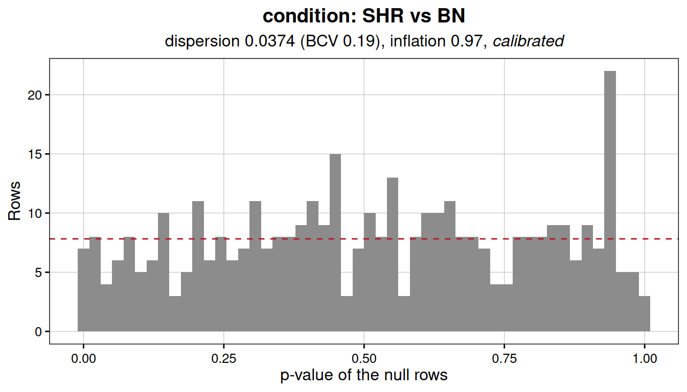
A flat histogram means the dispersion describes these two libraries
adequately. A peak near zero means it is too small, the test is
anticonservative, and every FDR downstream is optimistic. A peak near
one means the opposite and the analysis is discarding power it could
have had. In the second case the usual cause is that the null rows are
not as null as assumed, and moving source to a region set
you trust more is the first thing to try.
Testing
From here nothing differs from the replicated case. Both levels are available and the objects behave identically.
singleResults <- testRegions(singleFit,
contrast = c("condition", "SHR", "BN"),
verbose = FALSE)
singleSetResults <- testRegionSets(singleFit,
contrast = c("condition", "SHR", "BN"),
verbose = FALSE)
resultsTable(singleSetResults)
> region.set n.regions n.comparison n.comparison.overlapping mean.log2FC
> 1 promoterCpG 273 322 0 -0.34574769
> 2 geneBody 1178 1420 0 0.20023317
> 3 promoterNonCpG 371 1855 0 0.13289085
> 4 intergenic 776 1813 0 0.04786937
> median.log2FC mean.log2FC.comparison delta.log2FC CI.lower CI.upper
> 1 -0.35028835 0.287725959 -0.63347365 -1.1543354 -0.1126119
> 2 0.04587859 -0.005591536 0.20582471 -0.4605448 0.8721942
> 3 0.04333004 0.071712042 0.06117881 -0.6135756 0.7359332
> 4 0.04333004 0.108141759 -0.06027239 -0.7616854 0.6411406
> CI.type heterogeneity.CI.lower heterogeneity.CI.upper inter.region.cor
> 1 region -1.1543354 -0.1126119 0.01
> 2 region -0.4605448 0.8721942 0.01
> 3 region -0.6135756 0.7359332 0.01
> 4 region -0.7616854 0.6411406 0.01
> inter.region.cor.universe median.width camera.direction camera.p
> 1 0.01 1000 Down 1.650640e-12
> 2 0.01 1000 Up 7.329599e-02
> 3 0.01 1000 Up 4.546972e-01
> 4 0.01 1000 Up 5.513550e-01
> camera.FDR
> 1 6.602561e-12
> 2 1.465920e-01
> 3 5.513550e-01
> 4 5.513550e-01How much is lost
Since the packaged data has replicates, the same contrast can be run both ways and the answers compared, which is the check a reader wants before trusting the approach on data where it cannot be done.
fit <- loadExampleData("fit", verbose = FALSE)
replicatedTable <-
resultsTable(testRegions(fit = fit,
contrast = c("condition", "SHR", "BN"),
verbose = FALSE))
singleTable <- resultsTable(singleResults)
sharedRegions <- intersect(replicatedTable$region.id, singleTable$region.id)
comparisonTable <- data.frame(
replicated = replicatedTable$log2FC[match(sharedRegions, replicatedTable$region.id)],
singleSample = singleTable$log2FC[match(sharedRegions, singleTable$region.id)])
correlationTest <- stats::cor.test(comparisonTable$replicated,
comparisonTable$singleSample,
method = "spearman",
exact = FALSE)
# Below the double precision floor the exact value is meaningless
pValueLabel <- if (correlationTest$p.value < 2.2e-16) {
"p < 2.2e-16"
} else {
sprintf("p = %.3g", correlationTest$p.value)
}
annotationLabel <- sprintf("rho = %.3f\n%s",
correlationTest$estimate,
pValueLabel)
corr_plot <-
ggplot(comparisonTable,
aes(x = replicated, y = singleSample)) +
geom_abline(slope = 1, intercept = 0,
linetype = "dashed", colour = "gray50") +
geom_smooth(formula = y ~ x, method = "glm",
fill = "steelblue4", color = "navy") +
geom_point(alpha = 0.2, size = 1.2, stroke = NA) +
annotate(geom = "text",
x = -Inf, y = Inf,
hjust = -0.2, vjust = 1.3,
label = annotationLabel, size = 3.5, lineheight = 1.1) +
labs(x = "log2FC, two replicates per strain",
y = "log2FC, one library per strain") +
theme_bw(base_size = 10) +
theme(aspect.ratio = 1,
axis.text = element_text(color = "black"))
corr_plot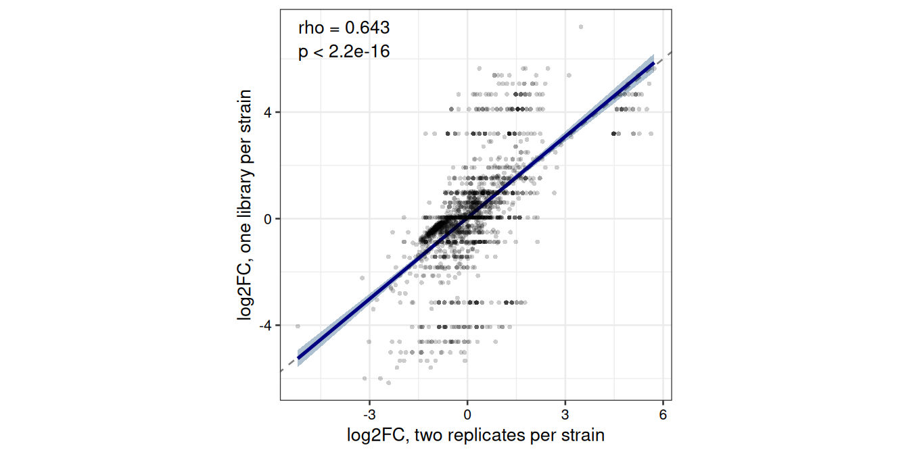
The two track each other, but not tightly, and the scatter widens toward the extremes, which is exactly where a single library has the least to say. Part of that is the comparison itself: the two analyses filter independently, so the shared regions are an intersection of two different sets rather than the same rows twice.
The fold changes are estimated from the same counts and the dispersion does not enter the point estimate, so what the replicates buy is not the effect size but the standard error around it, and therefore the ranking and the FDR. The honest summary of the no-replicate mode is that it gives you the same estimates with uncertainty resting on an assumption you have to check rather than on data you have measured.
That is also why the set level is where this mode earns its place.
Averaging across the hundreds or thousands of regions in a set is far
less sensitive to a misjudged dispersion than the fate of any single
region, so testRegionSets() stays informative on one pair
of libraries long after testRegions() has stopped returning
anything worth reading.
Exporting
exportResults() writes the tables in a form that
survives leaving R.
outputDirectory <- file.path(tempdir(), "regionSetDE-vignette")
dir.create(outputDirectory, showWarnings = FALSE)
exportResults(results,
path = outputDirectory,
prefix = "SHR_vs_BN",
verbose = FALSE)
list.files(outputDirectory)
> [1] "SHR_vs_BN_parameters.tsv" "SHR_vs_BN_regions.bed"
> [3] "SHR_vs_BN_regions.tsv.gz"Three kinds of file come out. The TSV holds the results table. The
BED holds the same regions with zero-based starts, as the format
requires, so its coordinates sit one lower than the TSV; with
colourByStatus it carries nine columns and an item colour
per direction, which is what makes a genome browser show increasing and
decreasing regions apart without a second file. The score maps
-log10(FDR) onto the range the format allows and saturates
at the top, so 1000 means at least that, not exactly
that.
The parameters file is the one worth keeping. It flattens everything
the object carries in its parameters slot into one
parameter per line: counting level, normalisation method and factors,
filter and threshold, engine, design, contrast, correction, and on a fit
with no replicates the dispersion and its source.
parameterFile <- list.files(outputDirectory,
pattern = "parameters",
full.names = TRUE)
head(read.delim(parameterFile), 10)
> parameter value
> 1 contrast condition: SHR vs BN
> 2 engine edgeR
> 3 genome.assembly rn4
> 4 seqlevels.style UCSC
> 5 thresholds.FDR 0.05
> 6 thresholds.log2FC 0
> 7 thresholds.lfcThreshold 0
> 8 thresholds.adjust.method BH
> 9 loadRegions.keepMetadata TRUE
> 10 loadRegions.sortRegions TRUESix months later that file is the difference between a result that can be reproduced and one that can only be repeated.
Which analysis for which question
| Question | Function | Read |
|---|---|---|
| Which individual regions changed? | testRegions() |
FDR and log2FC, through
topRegions()
|
| Did this class of regions respond as a class? | testRegionSets() |
delta.log2FC and its interval, then
camera.FDR
|
| Did the effect differ between two classes? | testSetContrast() |
the contrast between the two sets |
| Did one class gain what another lost? | testSetContrast() |
delta.log2FC between the two sets |
| Which class carries more signal, with only one condition? | scoreRegionSets() |
mean.delta.score and its interval, see When there is no contrast at all
|
| Are my conclusions sensitive to the normalisation? |
plotNormComparison(),
plotSetMA()
|
how far the methods disagree |
| Are my p-values trustworthy? | checkNullCalibration() |
flatness of the histogram |
| Can I test without replicates? | estimateNullDispersion() |
dispersion from the background, then
fitRegions(dispersion = )
|
| Is the competitive comparison fair? | plotUniverseMatching() |
overlap of the two distributions |
| Where in the region did the change happen? |
countReads(tileWidth = ), then
plotRegion()
|
the tile-level profile |
| Can I test without replicates? |
estimateNullDispersion(), then
fitRegions(dispersion = )
|
see Working without replicates |
Three habits are worth adopting from the start. Include a set you expect not to move, and check that it does not; the intergenic set in this vignette costs nothing and would have caught a normalisation problem immediately. Decide the normalisation deliberately rather than by default, and state the assumption, because no test downstream can undo it and no test downstream can validate it either. And say what the competitive comparison was against, since a set that stands out against three others is a different claim from one that stands out against a genome-wide catalogue.
Session info
sessionInfo()
> R version 4.6.1 (2026-06-24)
> Platform: x86_64-pc-linux-gnu
> Running under: Ubuntu 24.04.5 LTS
>
> Matrix products: default
> BLAS: /usr/lib/x86_64-linux-gnu/openblas-pthread/libblas.so.3
> LAPACK: /usr/lib/x86_64-linux-gnu/openblas-pthread/libopenblasp-r0.3.26.so; LAPACK version 3.12.0
>
> locale:
> [1] LC_CTYPE=C.UTF-8 LC_NUMERIC=C LC_TIME=C.UTF-8
> [4] LC_COLLATE=C.UTF-8 LC_MONETARY=C.UTF-8 LC_MESSAGES=C.UTF-8
> [7] LC_PAPER=C.UTF-8 LC_NAME=C LC_ADDRESS=C
> [10] LC_TELEPHONE=C LC_MEASUREMENT=C.UTF-8 LC_IDENTIFICATION=C
>
> time zone: UTC
> tzcode source: system (glibc)
>
> attached base packages:
> [1] stats4 stats graphics grDevices utils datasets methods
> [8] base
>
> other attached packages:
> [1] ggplot2_4.0.3 dplyr_1.2.1 RegionSetDE_0.99.0
> [4] GenomicRanges_1.64.0 Seqinfo_1.2.0 IRanges_2.46.0
> [7] S4Vectors_0.50.3 BiocGenerics_0.58.1 generics_0.1.4
> [10] BiocStyle_2.40.0
>
> loaded via a namespace (and not attached):
> [1] bitops_1.1-0 rlang_1.3.0
> [3] magrittr_2.0.5 clue_0.3-68
> [5] GetoptLong_1.1.1 otel_0.2.0
> [7] matrixStats_1.5.0 compiler_4.6.1
> [9] mgcv_1.9-4 png_0.1-9
> [11] systemfonts_1.3.2 vctrs_0.7.3
> [13] stringr_1.6.0 shape_1.4.6.1
> [15] pkgconfig_2.0.3 crayon_1.5.3
> [17] fastmap_1.2.0 XVector_0.52.0
> [19] labeling_0.4.3 Rsamtools_2.28.0
> [21] rmarkdown_2.32 markdown_2.0
> [23] UCSC.utils_1.8.0 ragg_1.5.2
> [25] xfun_0.61 cachem_1.1.0
> [27] cigarillo_1.2.1 litedown_0.11
> [29] GenomeInfoDb_1.48.0 jsonlite_2.0.0
> [31] DelayedArray_0.38.2 BiocParallel_1.46.0
> [33] cluster_2.1.8.2 parallel_4.6.1
> [35] R6_2.6.1 bslib_0.12.0
> [37] stringi_1.8.9 RColorBrewer_1.1-3
> [39] limma_3.68.5 rtracklayer_1.72.0
> [41] jquerylib_0.1.4 iterators_1.0.14
> [43] Rcpp_1.1.2 bookdown_0.48
> [45] SummarizedExperiment_1.42.0 knitr_1.52
> [47] Matrix_1.7-5 splines_4.6.1
> [49] tidyselect_1.2.1 abind_1.4-8
> [51] yaml_2.3.12 doParallel_1.0.17
> [53] ggtext_0.2.0 codetools_0.2-20
> [55] curl_8.0.0 lattice_0.22-9
> [57] tibble_3.3.1 Biobase_2.72.0
> [59] withr_3.0.3 S7_0.2.2
> [61] csaw_1.46.0 evaluate_1.0.5
> [63] desc_1.4.3 xml2_1.6.0
> [65] circlize_0.4.18 Biostrings_2.80.2
> [67] pillar_1.11.1 BiocManager_1.30.27
> [69] MatrixGenerics_1.24.0 foreach_1.5.2
> [71] RCurl_1.98-1.20 commonmark_2.0.0
> [73] scales_1.4.0 glue_1.8.1
> [75] metapod_1.20.0 tools_4.6.1
> [77] BiocIO_1.22.0 locfit_1.5-9.12
> [79] GenomicAlignments_1.48.0 fs_2.1.0
> [81] XML_3.99-0.24 grid_4.6.1
> [83] colorspace_2.1-3 edgeR_4.10.5
> [85] nlme_3.1-169 restfulr_0.0.17
> [87] cli_3.6.6 textshaping_1.0.5
> [89] S4Arrays_1.12.0 viridisLite_0.4.3
> [91] ComplexHeatmap_2.28.0 gtable_0.3.6
> [93] sass_0.4.10 digest_0.6.39
> [95] SparseArray_1.12.2 ggrepel_0.9.8
> [97] rjson_0.2.23 farver_2.1.2
> [99] htmltools_0.5.9 pkgdown_2.2.1
> [101] lifecycle_1.0.5 httr_1.4.9
> [103] GlobalOptions_0.1.4 statmod_1.5.2
> [105] gridtext_0.1.6